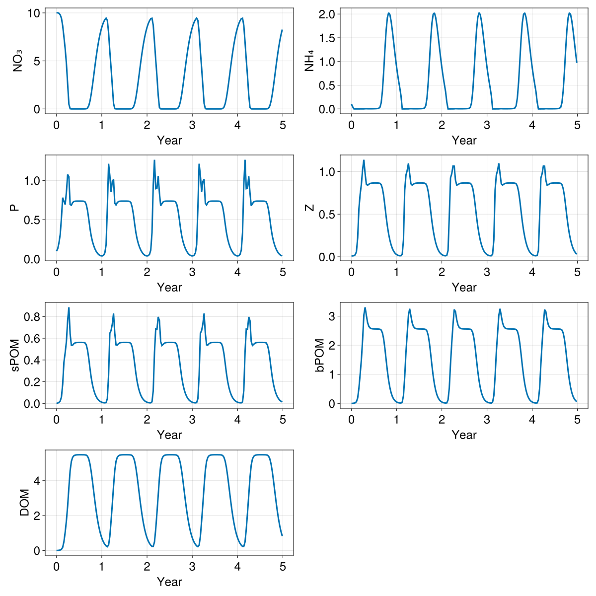

Box model
In this example we setup a LOBSTER biogeochemical model in a single box configuration. This example demonstrates:
- How to setup OceanBioME's biogeochemical models as a stand-alone box model
Install dependencies
First we check we have the dependencies installed
using Pkg
pkg"add OceanBioME"Model setup
Load the packages and setup the initial and forcing conditions
using OceanBioME, Oceananigans, Oceananigans.Units
using Oceananigans.Fields: FunctionField
const year = years = 365day
grid = BoxModelGrid()
clock = Clock(time = zero(grid))
This is forced by a prescribed time-dependent photosynthetically available radiation (PAR)
PAR⁰(t) = 60 * (1 - cos((t + 15days) * 2π / year)) * (1 / (1 + 0.2 * exp(-((mod(t, year) - 200days) / 50days)^2))) + 2
const z = -10 # specify the nominal depth of the box for the PAR profile
PAR_func(t) = PAR⁰(t) * exp(0.2z) # Modify the PAR based on the nominal depth and exponential decay
PAR = FunctionField{Center, Center, Center}(PAR_func, grid; clock)Set up the model. Here, first specify the biogeochemical model, followed by initial conditions and the start and end times
model = BoxModel(; biogeochemistry = LOBSTER(; grid, light_attenuation_model = PrescribedPhotosyntheticallyActiveRadiation(PAR)),
clock)
set!(model, NO₃ = 10.0, NH₄ = 0.1, P = 0.1, Z = 0.01)
simulation = Simulation(model; Δt = 5minutes, stop_time = 5years)
simulation.output_writers[:fields] = JLD2Writer(model, model.fields; filename = "box.jld2", schedule = TimeInterval(10days), overwrite_existing = true)
prog(sim) = @info "$(prettytime(time(sim))) in $(prettytime(simulation.run_wall_time))"
simulation.callbacks[:progress] = Callback(prog, IterationInterval(1000000))Callback of prog on IterationInterval(1000000)Run the model (should only take a few seconds)
@info "Running the model..."
run!(simulation)[ Info: Running the model...
[ Info: Initializing simulation...
[ Info: 0 seconds in 0 seconds
[ Info: ... simulation initialization complete (1.254 seconds)
[ Info: Executing initial time step...
[ Info: ... initial time step complete (492.762 ms).
[ Info: Simulation is stopping after running for 13.971 seconds.
[ Info: Simulation time 1825 days equals or exceeds stop time 1825 days.
Load the output
times = FieldTimeSeries("box.jld2", "P").times
timeseries = NamedTuple{keys(model.fields)}(FieldTimeSeries("box.jld2", "$field")[1, 1, 1, :] for field in keys(model.fields))(NO₃ = [10.0, 10.014827728271484, 9.95897388458252, 9.803510665893555, 9.442779541015625, 8.662609100341797, 7.509425640106201, 6.28082275390625, 4.7296462059021, 2.6037657260894775, 0.49699243903160095, 0.02149912528693676, 0.0014896010980010033, 0.0005181109299883246, 0.0004041373322252184, 0.00037882782635279, 0.00038870100979693234, 0.0004274704842828214, 0.0004989264998584986, 0.000614366726949811, 0.000799674482550472, 0.0011245888890698552, 0.001842557336203754, 0.004405509680509567, 0.019116252660751343, 0.09178268164396286, 0.32754045724868774, 0.8143759965896606, 1.5426056385040283, 2.446213483810425, 3.442251205444336, 4.453429222106934, 5.4193501472473145, 6.299293041229248, 7.070689678192139, 7.725664138793945, 8.266854286193848, 8.703203201293945, 9.045788764953613, 9.301924705505371, 9.45376205444336, 9.216421127319336, 7.959939002990723, 5.998084545135498, 4.28953218460083, 2.4428603649139404, 0.5708245635032654, 0.030698133632540703, 0.002071954309940338, 0.0006018210551701486, 0.0004324908077251166, 0.0003859775315504521, 0.0003806492895819247, 0.000404708698624745, 0.0004587739531416446, 0.0005501210107468069, 0.0006956583238206804, 0.000936620868742466, 0.0013998926151543856, 0.002654946641996503, 0.008666991256177425, 0.04288213700056076, 0.1816270649433136, 0.5381699800491333, 1.151710033416748, 1.9775946140289307, 2.9378275871276855, 3.950180768966675, 4.945048809051514, 5.871870517730713, 6.6993489265441895, 7.412761211395264, 8.01002311706543, 8.497440338134766, 8.885568618774414, 9.18465805053711, 9.3948392868042, 9.444413185119629, 8.720569610595703, 6.983459949493408, 5.122056007385254, 3.4110658168792725, 1.42829430103302, 0.14268764853477478, 0.007129342760890722, 0.0009154630824923515, 0.0004874455335084349, 0.0004022857756353915, 0.00037936310400255024, 0.00038913197931833565, 0.00042769438005052507, 0.0004990406450815499, 0.0006144299986772239, 0.0007997139473445714, 0.0011246178764849901, 0.001842585508711636, 0.00440555764362216, 0.019116384908556938, 0.09178299456834793, 0.3275409936904907, 0.8143766522407532, 1.5426063537597656, 2.446214199066162, 3.4422519207000732, 4.453429698944092, 5.419350624084473, 6.299293518066406, 7.070690155029297, 7.725664138793945, 8.266855239868164, 8.703203201293945, 9.045788764953613, 9.301924705505371, 9.45376205444336, 9.216421127319336, 7.959939002990723, 5.998084545135498, 4.28953218460083, 2.4428603649139404, 0.5708246231079102, 0.030698135495185852, 0.002071954309940338, 0.0006018210551701486, 0.0004324908077251166, 0.0003859775315504521, 0.0003806492895819247, 0.000404708698624745, 0.0004587739531416446, 0.0005501210107468069, 0.0006956583238206804, 0.000936620868742466, 0.0013998926151543856, 0.002654946641996503, 0.008666991256177425, 0.04288213700056076, 0.1816270649433136, 0.5381699800491333, 1.151710033416748, 1.9775946140289307, 2.9378275871276855, 3.950180768966675, 4.945048809051514, 5.871870517730713, 6.6993489265441895, 7.412761211395264, 8.01002311706543, 8.497440338134766, 8.885568618774414, 9.18465805053711, 9.3948392868042, 9.444413185119629, 8.720569610595703, 6.983459949493408, 5.122056007385254, 3.4110658168792725, 1.42829430103302, 0.14268764853477478, 0.007129342760890722, 0.0009154630824923515, 0.0004874455335084349, 0.0004022857756353915, 0.00037936310400255024, 0.00038913197931833565, 0.00042769438005052507, 0.0004990406450815499, 0.0006144299986772239, 0.0007997139473445714, 0.0011246178764849901, 0.001842585508711636, 0.00440555764362216, 0.019116384908556938, 0.09178299456834793, 0.3275409936904907, 0.8143766522407532, 1.5426063537597656, 2.446214199066162, 3.4422519207000732, 4.453429698944092, 5.419350624084473, 6.299293518066406, 7.070690155029297, 7.725664138793945, 8.266855239868164], NH₄ = [0.10000000149011612, 0.04295828938484192, 0.00011986427125521004, 0.000110588975076098, 0.00011421810631873086, 0.00016773933020886034, 0.0003909073129761964, 0.0006881710141897202, 0.0007237876998260617, 0.0007002828060649335, 0.0009715622873045504, 0.0037522525526583195, 0.0044226860627532005, 0.0034332985524088144, 0.003073380095884204, 0.003004128346219659, 0.003119824919849634, 0.0034144080709666014, 0.003921955358237028, 0.0047225854359567165, 0.006003470625728369, 0.008297214284539223, 0.013672569766640663, 0.034302063286304474, 0.12991629540920258, 0.37993282079696655, 0.7782343029975891, 1.247438669204712, 1.659198522567749, 1.9245091676712036, 2.026623010635376, 1.9898605346679688, 1.852348804473877, 1.6526621580123901, 1.423944354057312, 1.1914905309677124, 0.9722262024879456, 0.7752810120582581, 0.6026427745819092, 0.44728726148605347, 0.27661237120628357, 0.00016003442578949034, 0.0001333428081125021, 0.0003633669693954289, 0.0008385949768126011, 0.0009364128927700222, 0.001168465823866427, 0.004090860020369291, 0.00512328976765275, 0.003748397808521986, 0.0032042916864156723, 0.003022753866389394, 0.003046091180294752, 0.003246117616072297, 0.0036392435431480408, 0.004278411157429218, 0.005283518694341183, 0.006960444618016481, 0.01030957791954279, 0.02012486569583416, 0.06635681539773941, 0.23405666649341583, 0.5636929869651794, 1.011699914932251, 1.4679362773895264, 1.812601923942566, 1.9950060844421387, 2.023333787918091, 1.9312058687210083, 1.7580385208129883, 1.5401538610458374, 1.3069335222244263, 1.0794669389724731, 0.8706732988357544, 0.6860883235931396, 0.523810625076294, 0.36835777759552, 0.14620672166347504, 0.00012419659469742328, 0.0001989951852010563, 0.0006177780451253057, 0.0009296899661421776, 0.0009630321874283254, 0.0020232186652719975, 0.0056090643629431725, 0.004302455112338066, 0.003410106524825096, 0.003083109622821212, 0.0030120103619992733, 0.003123758127912879, 0.0034162369556725025, 0.003922843374311924, 0.004723055753856897, 0.006003750022500753, 0.008297410793602467, 0.013672759756445885, 0.03430239111185074, 0.12991690635681152, 0.3799334168434143, 0.7782347202301025, 1.2474387884140015, 1.659198522567749, 1.924509048461914, 2.026622772216797, 1.9898604154586792, 1.8523485660552979, 1.6526620388031006, 1.423944115638733, 1.1914904117584229, 0.9722261428833008, 0.7752809524536133, 0.6026427149772644, 0.4472872018814087, 0.2766123414039612, 0.00016003442578949034, 0.0001333428081125021, 0.00036336699849925935, 0.000838595035020262, 0.0009364128927700222, 0.001168465823866427, 0.004090860020369291, 0.00512328976765275, 0.003748397808521986, 0.0032042916864156723, 0.003022753866389394, 0.003046091180294752, 0.003246117616072297, 0.0036392435431480408, 0.004278411157429218, 0.005283518694341183, 0.006960444618016481, 0.01030957791954279, 0.02012486569583416, 0.06635681539773941, 0.23405666649341583, 0.5636929869651794, 1.011699914932251, 1.4679362773895264, 1.812601923942566, 1.9950060844421387, 2.023333787918091, 1.9312058687210083, 1.7580385208129883, 1.5401538610458374, 1.3069335222244263, 1.0794669389724731, 0.8706732988357544, 0.6860883235931396, 0.523810625076294, 0.36835777759552, 0.14620672166347504, 0.00012419659469742328, 0.0001989951852010563, 0.0006177780451253057, 0.0009296899661421776, 0.0009630321874283254, 0.0020232186652719975, 0.0056090643629431725, 0.004302455112338066, 0.003410106524825096, 0.003083109622821212, 0.0030120103619992733, 0.003123758127912879, 0.0034162369556725025, 0.003922843374311924, 0.004723055753856897, 0.006003750022500753, 0.008297410793602467, 0.013672759756445885, 0.03430239111185074, 0.12991690635681152, 0.3799334168434143, 0.7782347202301025, 1.2474387884140015, 1.659198522567749, 1.924509048461914, 2.026622772216797, 1.9898604154586792, 1.8523485660552979, 1.6526620388031006, 1.423944115638733, 1.1914904117584229, 0.9722261428833008], P = [0.10000000149011612, 0.130426824092865, 0.20609140396118164, 0.3110711872577667, 0.5239167213439941, 0.781402051448822, 0.7339014410972595, 0.693625271320343, 0.8497739434242249, 1.075597882270813, 1.0472710132598877, 0.693520188331604, 0.6849914789199829, 0.7183013558387756, 0.7318313121795654, 0.7358121275901794, 0.7369656562805176, 0.7373128533363342, 0.7373827695846558, 0.7373169660568237, 0.7371252179145813, 0.7366747260093689, 0.7352574467658997, 0.7279763221740723, 0.6939691305160522, 0.6204712986946106, 0.5107722282409668, 0.38963356614112854, 0.2927771508693695, 0.22251692414283752, 0.16985300183296204, 0.12899188697338104, 0.0973038524389267, 0.0734545961022377, 0.056447770446538925, 0.045394010841846466, 0.03971261903643608, 0.039762094616889954, 0.04856622964143753, 0.07819723337888718, 0.18235249817371368, 0.6523274779319763, 1.2134788036346436, 1.0639389753341675, 0.8541514277458191, 0.9869958758354187, 1.0134963989257812, 0.7099952697753906, 0.6876881122589111, 0.7183602452278137, 0.7317607998847961, 0.7358072996139526, 0.7369864583015442, 0.7373450994491577, 0.737428605556488, 0.7373872399330139, 0.7372494339942932, 0.7369549870491028, 0.736195981502533, 0.7331582307815552, 0.7159920334815979, 0.6618388295173645, 0.5696972012519836, 0.448682963848114, 0.3374009132385254, 0.2549114227294922, 0.19444705545902252, 0.148159921169281, 0.11209917813539505, 0.08446429669857025, 0.06415459513664246, 0.05022508278489113, 0.04189293086528778, 0.038929592818021774, 0.04267220199108124, 0.059214942157268524, 0.11320219188928604, 0.3357701301574707, 0.9427752494812012, 1.2635836601257324, 0.8955761194229126, 0.9006602764129639, 1.0542821884155273, 0.8389922976493835, 0.6779425740242004, 0.7048365473747253, 0.7269001007080078, 0.7343969345092773, 0.7365683317184448, 0.7372186183929443, 0.7374076247215271, 0.7374199628829956, 0.7373315691947937, 0.7371309399604797, 0.7366769313812256, 0.7352582812309265, 0.7279765605926514, 0.6939691305160522, 0.6204712390899658, 0.5107722282409668, 0.38963356614112854, 0.2927771508693695, 0.22251692414283752, 0.16985300183296204, 0.12899190187454224, 0.0973038524389267, 0.0734545961022377, 0.056447770446538925, 0.045394010841846466, 0.03971261903643608, 0.039762094616889954, 0.04856622964143753, 0.07819723337888718, 0.18235251307487488, 0.6523274779319763, 1.2134788036346436, 1.0639389753341675, 0.8541514277458191, 0.9869958758354187, 1.0134963989257812, 0.7099952697753906, 0.6876881122589111, 0.7183602452278137, 0.7317607998847961, 0.7358072996139526, 0.7369864583015442, 0.7373450994491577, 0.737428605556488, 0.7373872399330139, 0.7372494339942932, 0.7369549870491028, 0.736195981502533, 0.7331582307815552, 0.7159920334815979, 0.6618388295173645, 0.5696972012519836, 0.448682963848114, 0.3374009132385254, 0.2549114227294922, 0.19444705545902252, 0.148159921169281, 0.11209917813539505, 0.08446429669857025, 0.06415459513664246, 0.05022508278489113, 0.04189293086528778, 0.038929592818021774, 0.04267220199108124, 0.059214942157268524, 0.11320219188928604, 0.3357701301574707, 0.9427752494812012, 1.2635836601257324, 0.8955761194229126, 0.9006602764129639, 1.0542821884155273, 0.8389922976493835, 0.6779425740242004, 0.7048365473747253, 0.7269001007080078, 0.7343969345092773, 0.7365683317184448, 0.7372186183929443, 0.7374076247215271, 0.7374199628829956, 0.7373315691947937, 0.7371309399604797, 0.7366769313812256, 0.7352582812309265, 0.7279765605926514, 0.6939691305160522, 0.6204712390899658, 0.5107722282409668, 0.38963356614112854, 0.2927771508693695, 0.22251692414283752, 0.16985300183296204, 0.12899190187454224, 0.0973038524389267, 0.0734545961022377, 0.056447770446538925, 0.045394010841846466, 0.03971261903643608], Z = [0.009999999776482582, 0.01036160159856081, 0.013349762186408043, 0.022914478555321693, 0.05925460532307625, 0.2215864509344101, 0.5632218718528748, 0.7326152324676514, 0.8514434695243835, 1.0254400968551636, 1.1385185718536377, 0.9785510897636414, 0.8516144752502441, 0.8390449285507202, 0.8513263463973999, 0.8599944114685059, 0.8638564944267273, 0.8653374910354614, 0.8658534288406372, 0.8659818768501282, 0.8659201860427856, 0.8656766414642334, 0.8649802803993225, 0.8620098829269409, 0.8465665578842163, 0.8009541630744934, 0.7169097661972046, 0.5979580283164978, 0.47117912769317627, 0.3594959080219269, 0.26838579773902893, 0.1961282193660736, 0.14010721445083618, 0.09793174266815186, 0.06724778562784195, 0.04567970708012581, 0.030999064445495605, 0.021328672766685486, 0.015278157778084278, 0.012102610431611538, 0.01261300127953291, 0.030619146302342415, 0.19939349591732025, 0.7825743556022644, 0.9584974646568298, 1.0127965211868286, 1.096345067024231, 0.9769718050956726, 0.8566009998321533, 0.8410231471061707, 0.8518320322036743, 0.8601090312004089, 0.8638952374458313, 0.8653673529624939, 0.8658894896507263, 0.8660331964492798, 0.8660032153129578, 0.8658403158187866, 0.8654317855834961, 0.8640806674957275, 0.8570666909217834, 0.8282279372215271, 0.7640365362167358, 0.6604833602905273, 0.5336382985115051, 0.41280949115753174, 0.31141963601112366, 0.23006920516490936, 0.16624127328395844, 0.11743456870317459, 0.08130263537168503, 0.05546963959932327, 0.03760595992207527, 0.025637075304985046, 0.017915893346071243, 0.013341499492526054, 0.01169651746749878, 0.01655091531574726, 0.0739053338766098, 0.47598394751548767, 0.9260565638542175, 0.9752743244171143, 1.064494013786316, 1.0633857250213623, 0.8993756175041199, 0.8415043950080872, 0.8460263609886169, 0.8566446304321289, 0.8624204397201538, 0.8648105263710022, 0.8656989336013794, 0.8659906983375549, 0.8660345673561096, 0.8659405708312988, 0.8656845092773438, 0.864983320236206, 0.8620110750198364, 0.846566915512085, 0.800954282283783, 0.7169097661972046, 0.597957968711853, 0.47117912769317627, 0.3594959080219269, 0.26838579773902893, 0.1961282193660736, 0.14010721445083618, 0.09793174266815186, 0.06724778562784195, 0.04567970708012581, 0.030999064445495605, 0.021328672766685486, 0.015278157778084278, 0.012102610431611538, 0.01261300127953291, 0.030619148164987564, 0.19939351081848145, 0.7825743556022644, 0.9584974050521851, 1.0127965211868286, 1.096345067024231, 0.9769718050956726, 0.8566009998321533, 0.8410231471061707, 0.8518320322036743, 0.8601090312004089, 0.8638952374458313, 0.8653673529624939, 0.8658894896507263, 0.8660331964492798, 0.8660032153129578, 0.8658403158187866, 0.8654317855834961, 0.8640806674957275, 0.8570666909217834, 0.8282279372215271, 0.7640365362167358, 0.6604833602905273, 0.5336382985115051, 0.41280949115753174, 0.31141963601112366, 0.23006920516490936, 0.16624127328395844, 0.11743456870317459, 0.08130263537168503, 0.05546963959932327, 0.03760595992207527, 0.025637075304985046, 0.017915893346071243, 0.013341499492526054, 0.01169651746749878, 0.01655091531574726, 0.0739053338766098, 0.47598394751548767, 0.9260565638542175, 0.9752743244171143, 1.064494013786316, 1.0633857250213623, 0.8993756175041199, 0.8415043950080872, 0.8460263609886169, 0.8566446304321289, 0.8624204397201538, 0.8648105263710022, 0.8656989336013794, 0.8659906983375549, 0.8660345673561096, 0.8659405708312988, 0.8656845092773438, 0.864983320236206, 0.8620110750198364, 0.846566915512085, 0.800954282283783, 0.7169097661972046, 0.597957968711853, 0.47117912769317627, 0.3594959080219269, 0.26838579773902893, 0.1961282193660736, 0.14010721445083618, 0.09793174266815186, 0.06724778562784195, 0.04567970708012581, 0.030999064445495605], sPOM = [0.0, 0.003573118709027767, 0.009635274298489094, 0.022307224571704865, 0.0590001717209816, 0.17683856189250946, 0.3791361153125763, 0.46619272232055664, 0.5694960951805115, 0.7631527781486511, 0.8850253820419312, 0.6406363844871521, 0.5343838930130005, 0.5363081693649292, 0.5497902035713196, 0.5571796298027039, 0.5601804256439209, 0.5612833499908447, 0.5616522431373596, 0.5617240071296692, 0.5616370439529419, 0.5613707304000854, 0.5606057643890381, 0.5572201609611511, 0.539900541305542, 0.4932370185852051, 0.41649436950683594, 0.32241830229759216, 0.23768512904644012, 0.17293454706668854, 0.1250392198562622, 0.08941566199064255, 0.06296256184577942, 0.04362374171614647, 0.029821671545505524, 0.020225632935762405, 0.013720390386879444, 0.00943384412676096, 0.006775324232876301, 0.005605016835033894, 0.007789107505232096, 0.0443393774330616, 0.25883346796035767, 0.6455707550048828, 0.6709123849868774, 0.7297868132591248, 0.8283772468566895, 0.6453545093536377, 0.5391706228256226, 0.5377135276794434, 0.5500903725624084, 0.5572451949119568, 0.5602094531059265, 0.5613113045692444, 0.5616881251335144, 0.5617759823799133, 0.5617226958274841, 0.5615440607070923, 0.5611026287078857, 0.5595915913581848, 0.5515667200088501, 0.520501971244812, 0.4583677649497986, 0.3698858916759491, 0.27768900990486145, 0.20288483798503876, 0.1471981555223465, 0.10592062771320343, 0.07518742978572845, 0.05250953882932663, 0.036118652671575546, 0.02457292005419731, 0.016647232696413994, 0.011343947611749172, 0.007924888283014297, 0.005979523994028568, 0.005911155138164759, 0.01479307934641838, 0.11755424737930298, 0.4696583151817322, 0.6847730875015259, 0.6813927292823792, 0.7964075207710266, 0.7614238858222961, 0.5696017742156982, 0.5334881544113159, 0.544272780418396, 0.5543724894523621, 0.5590761303901672, 0.5608985424041748, 0.5615530610084534, 0.5617549419403076, 0.5617635250091553, 0.5616523623466492, 0.5613766312599182, 0.5606080293655396, 0.557220995426178, 0.5399007797241211, 0.49323707818984985, 0.41649436950683594, 0.32241830229759216, 0.23768512904644012, 0.17293454706668854, 0.1250392198562622, 0.08941566199064255, 0.06296256184577942, 0.04362374171614647, 0.029821671545505524, 0.020225632935762405, 0.013720391318202019, 0.00943384412676096, 0.006775324232876301, 0.005605016835033894, 0.007789107970893383, 0.0443393811583519, 0.25883346796035767, 0.6455707550048828, 0.6709123849868774, 0.7297868132591248, 0.8283772468566895, 0.6453545093536377, 0.5391706228256226, 0.5377135276794434, 0.5500903725624084, 0.5572451949119568, 0.5602094531059265, 0.5613113045692444, 0.5616881251335144, 0.5617759823799133, 0.5617226958274841, 0.5615440607070923, 0.5611026287078857, 0.5595915913581848, 0.5515667200088501, 0.520501971244812, 0.4583677649497986, 0.3698858916759491, 0.27768900990486145, 0.20288483798503876, 0.1471981555223465, 0.10592062771320343, 0.07518742978572845, 0.05250953882932663, 0.036118652671575546, 0.02457292005419731, 0.016647232696413994, 0.011343947611749172, 0.007924888283014297, 0.005979523994028568, 0.005911155138164759, 0.01479307934641838, 0.11755424737930298, 0.4696583151817322, 0.6847730875015259, 0.6813927292823792, 0.7964075207710266, 0.7614238858222961, 0.5696017742156982, 0.5334881544113159, 0.544272780418396, 0.5543724894523621, 0.5590761303901672, 0.5608985424041748, 0.5615530610084534, 0.5617549419403076, 0.5617635250091553, 0.5616523623466492, 0.5613766312599182, 0.5606080293655396, 0.557220995426178, 0.5399007797241211, 0.49323707818984985, 0.41649436950683594, 0.32241830229759216, 0.23768512904644012, 0.17293454706668854, 0.1250392198562622, 0.08941566199064255, 0.06296256184577942, 0.04362374171614647, 0.029821671545505524, 0.020225632935762405, 0.013720391318202019], bPOM = [0.0, 0.0035753059200942516, 0.009651800617575645, 0.02240138314664364, 0.05967976897954941, 0.1868450790643692, 0.5215983986854553, 0.9961959719657898, 1.5059599876403809, 2.199458122253418, 3.03590726852417, 3.302908420562744, 3.0315897464752197, 2.7793807983398438, 2.64855694770813, 2.593064308166504, 2.5712506771087646, 2.5627691745758057, 2.5593466758728027, 2.5577850341796875, 2.5568127632141113, 2.5557966232299805, 2.5539662837982178, 2.5481679439544678, 2.5203633308410645, 2.4235126972198486, 2.2144429683685303, 1.8863080739974976, 1.4941529035568237, 1.1155263185501099, 0.7964250445365906, 0.5490739941596985, 0.36788925528526306, 0.2407766580581665, 0.1546810269355774, 0.09802621603012085, 0.0616043284535408, 0.03864206746220589, 0.024484122171998024, 0.016304107382893562, 0.014247194863855839, 0.04831695184111595, 0.26861441135406494, 0.9157042503356934, 1.7538809776306152, 2.388204574584961, 3.0202836990356445, 3.2533481121063232, 3.0133094787597656, 2.7746217250823975, 2.647498607635498, 2.592849016189575, 2.5712389945983887, 2.562832832336426, 2.5594630241394043, 2.55796217918396, 2.557086706161499, 2.5562732219696045, 2.555040121078491, 2.552039384841919, 2.539437770843506, 2.4838435649871826, 2.334660291671753, 2.0632476806640625, 1.6930092573165894, 1.2993121147155762, 0.947170615196228, 0.6638798117637634, 0.4508998990058899, 0.2984060049057007, 0.1933756023645401, 0.12330809235572815, 0.07776378840208054, 0.04877663403749466, 0.030681297183036804, 0.019748268648982048, 0.014222678728401661, 0.019820282235741615, 0.12140855193138123, 0.5275421142578125, 1.3604999780654907, 2.08145809173584, 2.7087461948394775, 3.225050926208496, 3.154960870742798, 2.8800647258758545, 2.6988143920898438, 2.6140851974487305, 2.579535484313965, 2.5660696029663086, 2.5607845783233643, 2.558582067489624, 2.5574891567230225, 2.5566980838775635, 2.5557522773742676, 2.5539491176605225, 2.548161268234253, 2.5203604698181152, 2.423511266708374, 2.214442253112793, 1.8863075971603394, 1.4941526651382446, 1.1155260801315308, 0.796424925327301, 0.5490739345550537, 0.3678892254829407, 0.2407766431570053, 0.1546810120344162, 0.09802620857954025, 0.061604324728250504, 0.03864206373691559, 0.024484120309352875, 0.016304107382893562, 0.014247193932533264, 0.04831695556640625, 0.26861441135406494, 0.9157042503356934, 1.7538809776306152, 2.388204574584961, 3.0202834606170654, 3.2533481121063232, 3.0133094787597656, 2.7746217250823975, 2.647498607635498, 2.592849016189575, 2.5712389945983887, 2.562832832336426, 2.5594630241394043, 2.55796217918396, 2.557086706161499, 2.5562732219696045, 2.555040121078491, 2.552039384841919, 2.539437770843506, 2.4838435649871826, 2.334660291671753, 2.0632476806640625, 1.6930092573165894, 1.2993121147155762, 0.947170615196228, 0.6638798117637634, 0.4508998990058899, 0.2984060049057007, 0.1933756023645401, 0.12330809235572815, 0.07776378840208054, 0.04877663403749466, 0.030681297183036804, 0.019748268648982048, 0.014222678728401661, 0.019820282235741615, 0.12140855193138123, 0.5275421142578125, 1.3604999780654907, 2.08145809173584, 2.7087461948394775, 3.225050926208496, 3.154960870742798, 2.8800647258758545, 2.6988143920898438, 2.6140851974487305, 2.579535484313965, 2.5660696029663086, 2.5607845783233643, 2.558582067489624, 2.5574891567230225, 2.5566980838775635, 2.5557522773742676, 2.5539491176605225, 2.548161268234253, 2.5203604698181152, 2.423511266708374, 2.214442253112793, 1.8863075971603394, 1.4941526651382446, 1.1155260801315308, 0.796424925327301, 0.5490739345550537, 0.3678892254829407, 0.2407766431570053, 0.1546810120344162, 0.09802620857954025, 0.061604324728250504], DOM = [0.0, 0.004277539439499378, 0.012178177945315838, 0.0276845321059227, 0.06525460630655289, 0.1805507391691208, 0.5023255348205566, 1.039859652519226, 1.7029566764831543, 2.5418851375579834, 3.605313777923584, 4.569132328033447, 5.101508140563965, 5.333013534545898, 5.425017833709717, 5.460566520690918, 5.474238395690918, 5.47945499420166, 5.481344223022461, 5.481855392456055, 5.481701374053955, 5.481059551239014, 5.47967529296875, 5.475917816162109, 5.46016788482666, 5.40010929107666, 5.245605945587158, 4.951867580413818, 4.512401580810547, 3.968803644180298, 3.381422519683838, 2.8031005859375, 2.270038366317749, 1.802258014678955, 1.4071675539016724, 1.0835199356079102, 0.8248827457427979, 0.6223490834236145, 0.4664646089076996, 0.3485792875289917, 0.2626233696937561, 0.21781547367572784, 0.30960729718208313, 0.803763747215271, 1.6821871995925903, 2.6484193801879883, 3.679504871368408, 4.589541435241699, 5.106035232543945, 5.333930969238281, 5.4251813888549805, 5.460580825805664, 5.4742431640625, 5.479492664337158, 5.481432914733887, 5.482012748718262, 5.481958866119385, 5.481490135192871, 5.480520248413086, 5.4783501625061035, 5.470912933349609, 5.438648700714111, 5.337918281555176, 5.117830276489258, 4.7486162185668945, 4.249885559082031, 3.6769309043884277, 3.08845591545105, 2.5293173789978027, 2.0272767543792725, 1.5955455303192139, 1.2367295026779175, 0.9465998411178589, 0.7171987295150757, 0.5391490459442139, 0.40324699878692627, 0.30177024006843567, 0.23244522511959076, 0.23366287350654602, 0.489573210477829, 1.2204203605651855, 2.1592190265655518, 3.1568126678466797, 4.176436424255371, 4.89538049697876, 5.2448883056640625, 5.39008903503418, 5.447015285491943, 5.469008445739746, 5.477489948272705, 5.480711936950684, 5.481830596923828, 5.482043743133545, 5.48177433013916, 5.481087684631348, 5.4796857833862305, 5.475922107696533, 5.460169315338135, 5.400109767913818, 5.24560546875, 4.95186710357666, 4.512401103973389, 3.9688031673431396, 3.381422281265259, 2.803100347518921, 2.27003812789917, 1.8022578954696655, 1.4071674346923828, 1.0835198163986206, 0.8248826861381531, 0.6223490834236145, 0.4664645791053772, 0.3485792577266693, 0.2626233696937561, 0.21781545877456665, 0.30960729718208313, 0.803763747215271, 1.6821870803833008, 2.6484193801879883, 3.679504632949829, 4.589541435241699, 5.106035232543945, 5.333930969238281, 5.4251813888549805, 5.460580825805664, 5.4742431640625, 5.479492664337158, 5.481432914733887, 5.482012748718262, 5.481958866119385, 5.481490135192871, 5.480520248413086, 5.4783501625061035, 5.470912933349609, 5.438648700714111, 5.337918281555176, 5.117830276489258, 4.7486162185668945, 4.249885559082031, 3.6769309043884277, 3.08845591545105, 2.5293173789978027, 2.0272767543792725, 1.5955455303192139, 1.2367295026779175, 0.9465998411178589, 0.7171987295150757, 0.5391490459442139, 0.40324699878692627, 0.30177024006843567, 0.23244522511959076, 0.23366287350654602, 0.489573210477829, 1.2204203605651855, 2.1592190265655518, 3.1568126678466797, 4.176436424255371, 4.89538049697876, 5.2448883056640625, 5.39008903503418, 5.447015285491943, 5.469008445739746, 5.477489948272705, 5.480711936950684, 5.481830596923828, 5.482043743133545, 5.48177433013916, 5.481087684631348, 5.4796857833862305, 5.475922107696533, 5.460169315338135, 5.400109767913818, 5.24560546875, 4.95186710357666, 4.512401103973389, 3.9688031673431396, 3.381422281265259, 2.803100347518921, 2.27003812789917, 1.8022578954696655, 1.4071674346923828, 1.0835198163986206, 0.8248826861381531])And plot
using CairoMakie
fig = Figure(size = (1200, 1200), fontsize = 24)
axs = []
for (name, tracer) in pairs(timeseries)
idx = (length(axs))
push!(axs, Axis(fig[floor(Int, idx/2), Int(idx%2)], ylabel = "$name", xlabel = "Year", xticks=(0:10)))
lines!(axs[end], times / year, tracer, linewidth = 3)
end
fig
This page was generated using Literate.jl.